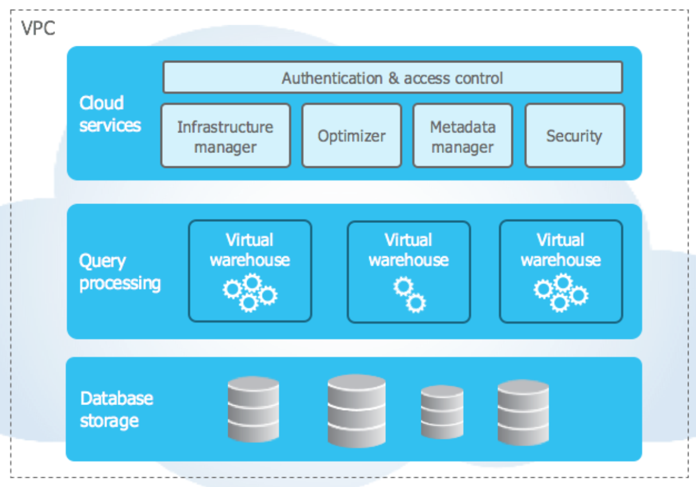

Data Stores
Data Lakes
A storage repository that holds a large amount of data in its raw format.
Data lake stores are optimized for scaling to gigabytes/petabytes of data.
The data typically comes from multiple sources and can be structured, semi-structured, or unstructured.
The idea with a data lake is to store everything in its original untransformed state.
Advantages
Data is never thrown away since the data is stored in its raw format.
This is especially useful when you may not know in advance what insights can be drawn from the data.
More flexible than a data warehouse as data can stored as unstructured and semi-structured in a Data Lake.
Disadvantages
Data Reliability:
Lack of a schema enforcement
Lack of consistency across the data can make it challenging to perform analysis on the data.
Data Governance:
Data change catalog is not maintained (e.g. inserts, updates, etc.)
Query performance:
Unnecessary reads from disk
Small files to scan
Metadata management
See Delta Lakes below to address some of these challenges.
Delta Lakes

Delta stores a transaction log to keep track of all the commits made to the table directory to provide ACID transactions.
ACID =
atomicity,consistency,isolation,durabilityAlso enables schema enforcement, by helping to avoid bad data getting your data lakes by providing the ability to specify the schema.
Supports schema evolution like adding a new column.
Handles Unified Batch and Stream Processing.
If we have a use-case of both Stream processing and Batch processing it is normal to follow
Lambda Architecture. Data coming in as Stream or any historical data you have is the same table being updated.
Advantages
100% compatible with Apache Spark api.
Time travel
ACID transactions
Schema enforcement
Small file compaction
Statistic and data skipping
Unified batch and stream processing
Z-Ordering
A technique to colocate related information in the same set of files. Z-ordering is basically a data-skipping algorithm to dramatically reduce the amount of data that needs to be read.
To Z-Order data, you specify the columns to order on in the
ZORDER BYclause:
OPTIMIZE events
WHERE date >= current_timestamp() - INTERVAL 1 day
ZORDER BY (eventType)
Data Warehouse
A database designed to store and process large volumes of current and historical data collected from multiple sources inside and outside the enterprise for deep analysis.
Organizes data into tables and columns, and allows users access via SQL.
Optimized for loading, integrating and analyzing very large amounts of data.
Designed to support descriptive, diagnostic, predictive and prescriptive analytic workloads.
Snowflake
Snowflake offers a cloud-based data storage and analytics service, generally termed
data warehouse-as-a-service.Snowflake uses virtual compute instances for its compute needs and a storage service for persistent storage of data.
Three Main Components
Database Storage
Query Processing
Cloud Services
Architecture
Snowflake’s architecture allows storage and compute to scale independently.
Similar to shared-disk architectures, Snowflake uses a central data repository for persisted data that is accessible from all compute nodes in the platform.
Snowflake processes queries using
MPP(massively parallel processing) compute clusters where each node in the cluster stores a portion of the entire data set locally.This approach offers the data management simplicity of a shared-disk architecture.
 Reference
Database storage
The database storage layer holds all data loaded into Snowflake, including structured and semistructured data.
Snowflake automatically manages all aspects of how the data is stored: organization, file size, structure, compression, metadata, and statistics.
Compute layer
The compute layer is made up of virtual warehouses that execute data processing tasks required for queries.
Each virtual warehouse (or cluster) can access all the data in the storage layer, then work independently, so the warehouses does not share, or compete for, compute resources.
This enables nondisruptive, automatic scaling, which means that while queries are running, compute resources can scale without the need to redistribute or rebalance the data in the storage layer.
Partition Strategies
You can partition a
Deltatable by a column.The most commonly used partition column is date.
If the cardinality of a column will be very high, do not use that column for partitioning.
For example, if you partition by a column userId and if there can be 1M distinct user IDs, then that is a bad partitioning strategy.
Amount of data in each partition: You can partition by a column if you expect data in that partition to be at least 1 GB.
Data Compaction:
If you continuously write data to a Delta table, it will over time accumulate a large number of files, especially if you add data in small batches.
This can have an adverse effect on the efficiency of table reads, and it can also affect the performance of your file system. Ideally, a large number of small files should be rewritten into a smaller number of larger files on a regular basis.
This is known as
compaction.You can compact a table by repartitioning it to a smaller number of files.
Data Serialization
Serialization is the process of converting an object into a stream of bytes to store the object or transmit it to memory, a database, or a file.
Its main purpose is to save the state of an object in order to be able to recreate it when needed.
The reverse process is called deserialization.
Serialization is the process of converting an object into a stream of bytes to store the object or transmit it to memory, a database, or a file.
Its main purpose is to save the state of an object in order to be able to recreate it when needed. The reverse process is called deserialization.